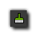

The Graphical User Interface (GUI)
This page outlines options available to you from the GameMaker:Studio GUI.
On starting GameMaker:Studio the following form is normally shown which presents you with a selection of options to choose from (unless you use the Steam Client, see below):
If you have bought GameMaker:Studio through Steam, then on startup you will be presented with an options screen (shown below) from which you can select to Play games from the
Steam Workshop, or to Make games with the program. If you select Play then GameMaker:Studio will close and the
Steam player will open, however if you choose Make then you will be presented with the standard GameMaker:Studio startup screen.
At the top of the general startup screen you can see that there are six tabs: Welcome (always the initial startup screen), News, Create, Tutorials and Demos. Here is a brief overview of the function of each of
those tabs:
- Welcome: This is the startup screen you see when opening up GameMaker:Studio. At the bottom you have a list of previously opened files.
- Open: Here you can browse your computer for files to open.
- New: This will ask you to select the directory you wish to use for a new project and prompt you to enter a name for this project which is then saved and opened in the main GameMaker:Studio
runner.
- Import: Here you can load up the compressed *.gmz project files and also import game files created with other versions of GameMaker, including GameMaker 6 (*.gm6), GameMaker 7 and 8
(*.gmk and *.gm81) as well as GameMaker 8.1 (*.gm81) and much older (*.gmd) files. It should be noted, that the older the file type, the less likely they are to run without a lot of rework due to the changes
wrought in GameMaker through the years. Additionally, you can load up GameMaker backup files (*.gb1, *.gb2 etc) from this tab too.
- Release Notes: If you click on this button you can see the release notes for each released version of GameMaker:Studio. These notes outline all the bug fixes and changes that have been
incorporated into the program and tell you which version you are currently using.
- Demos: This will allow you to view demo files that come with GameMaker:Studio. Demos are different to tutorials in that they focus on explaining just one function or concept rather than
giving a general overview, and as such it is recommended that you have a working knowledge of GameMaker:Studio and GML before opening these.
- Tutorials: This tab shows you a selection of tutorials that come with GameMaker:Studio. These are designed as an introduction to using GameMaker:Studio and it is recommended
that new users look them over before starting any new projects of their own.
- News: This will display the most recent news from YoYoGames. This news includes information about GameMaker:Studio development, new versions, competitions and anything else that
has been posted on the YoYoGames website.
- Licenses: This tab will display the GameMaker:Studio license, as well as all the various third party licenses of products that are used.
To begin creating your game, you can click on either the Create tab or the New project button, whichever you find more convenient.
Once you've loaded up your project in GameMaker:Studio the main GUI is shown and looks something like this:
This is the main interface for GameMaker:Studio and it's here that you control every aspect of your current project. On the left, you can see the different resources mentioned in other sections of the
manual: Sprites, Sounds, Backgrounds, Paths, Scripts, Fonts, Time Lines, Objects, Global Game Settings and finally, Extensions. At the top of the window there is the menu and a handy tool-bar to access some
of the most used commands when creating a game. We will briefly discuss the various menu items, buttons, etc... below, but they will be covered far more in-depth in the later sections of the manual. One thing
you should realise at this point is that many of the same things can be achieved in various different ways when working with GameMaker:Studio, either by choosing a command from the menu, by clicking
a tool-bar button, or by right clicking on a resource. This redundancy is there so that you can get working with GameMaker:Studio in the easiest and most natural way, using whatever system you feel
most comfortable with.
Steam users have three additional buttons on the toolbar:
 This first button will open the Steam Player where you can play any games you have subscribed to or uploaded to the
Steam Workshop.
This first button will open the Steam Player where you can play any games you have subscribed to or uploaded to the
Steam Workshop.
This second button will open up the page of the GameMaker:Studio Steam Workshop in the Steam client window on your PC.
 The final button available to you will open another version of the GameMaker:Studio IDE so you can have two (or more) projects open at one time.
The final button available to you will open another version of the GameMaker:Studio IDE so you can have two (or more) projects open at one time.
The Resource Tree
At the left of the main form you find the resource tree. Here you will see a "tree" view of all the resources in your game. It works in the same way as Windows Explorer, and
you are most likely familiar with how it should work. If an item has a + sign in front of it you can click on the sign to see the resources inside it (expand it). By
clicking on the - sign these disappear again (collapse it). You can change the name of a resource (except the top level ones that show the type of resource contained
within) by selecting it once with a single click, and then giving another single click on the name once again. Double clicking on a resource in quick succession will automatically
open its properties form where you can edit and change things related to it. Use the right mouse button to call up a context specific window that contains the same commands as
found in the Edit Menu.
You can change the order of the resources by clicking on a specific resoource and then dragging it to the appropriate place within its resource group.
The Toolbar
The toolbar in GameMaker:Studio contains buttons to create each of the resources you see present as well as a selection of additional buttons to create a new project, open an existing project,
save a project, create an executable (export a final project), open the global games settings and extension packages as well as opening the help file. All these commands can also be accessed through
the drop down menus or by using certain "hot key" combinations.
There are two buttons of note here however, as they are not present anywhere else in the GameMaker:Studio GUI:
 Stop Web Server
Stop Web Server
This button can be used to cancel the compilation of your games to the target module, or (on certain targets only) to stop the game while it is running after it has been compiled.
Clear Project Asset Compile Cache
Pressing this button will clear the current asset compiler cache. GameMaker:Studio stores images, sounds, scripts etc... between use in a cache so as to save time when testing your game as it will
only re-compile those things that have been changed before testing. However, this cache may become corrupted over time, or you may wish to do a full test with no caching being done previously, in which
case you can clear the cache by pressing this button.
The Compile Target
This drop down menu allows you to choose which device to target when compiling and testing your game. In this way you can quickly change between the different modules that you have installed on
GameMaker:Studio and make sure that your project works as it should on all of them. The avalailable target modules are:
| Windows | included in all versions |
| MacOSX | included in all versions |
| Steam WORKSHOP | included in all versions of GameMaker:Studio bought through Steam |
| Windows 8 (JavaScript) | included in all version |
| Windows 8 (Native) | included in all version |
| HTML5 | additional module for the Professional Version |
| Ubuntu (Linux) | additional module for the Professional Version |
| iOS | additional module for the Professional Version |
| Android | additional module for the Professional Version |
| Tizen | additional module for the Professional Version |
| Windows Phone | additional module for the Professional Version |
Please note that the additional modules can only be bought for the Professional Version of GameMaker:Studio, and if you have bought
GameMaker:Studio through Steam, you will also have another target platform for your game which is the Steam Workshop. This target will permit you to publish your windows
games straight to Steam for others to download and play. For more information on this target please see here.
Configurations
Here you can find a drop down menu that permits you to select the current configuration of GameMaker:Studio and beside this there is a button labelled "Manage". By clicking this you can
open the Configurations Window wich permits you to add, remove and rename configurations. For more information on configurations see this section:
- Advanced Use - Configurations
NOTE : This functionality is limited to the Professional Version of GameMaker:Studio.
The Workspace
This is the area where you will be editing your resources, setting up rooms and working with your objects, code and all other resources.
The Main Menus
At the very top of the GUI you will find the drop down menus. As there are a number of them and each has its own selection of options, you can find out more about them from the pages listed below :
- The File Menu
- The Edit Menu
- The Resources Menu
- The Scripts Menu
- The Run Menu
- The Window Menu
- The Help Menu
© Copyright YoYo Games Ltd. 2013 All Rights Reserved